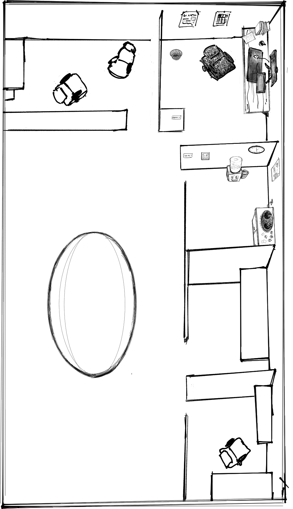

list
+ new session
put away
tile
refresh
usage
collapse
Sessions
5-hour
weekly

hand off
drop a session here
name
purpose
permissions
ask me every time
edits without asking
plan only, no changes
model
sonnet: most workers
opus: a lead, or hard reasoning
haiku: quick, narrow jobs
hire
cancel
Usage
today
7 days
30 days
all
×
collapse
map
office
tile
+opus
+sonnet
+haiku
refresh
usage